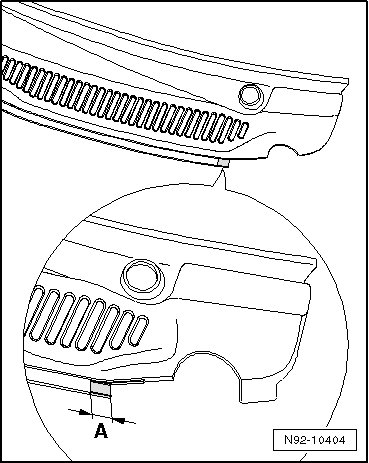
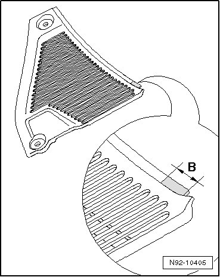

Wiper Frame With Linkage, Through 22.07
Windshield Wiper System
Wiper Frame with Linkage, through 22.07
If a linkage with part number 7L0.955.601.B/ 602.B or higher is installed on a Touareg through MY 2007, the plenum chamber cover must be cut as follows before installing.
- Remove plenum chamber cover --> [ Plenum Chamber Cover, Removing ]. Plenum Chamber Cover, Removing
- Shorten the plenum chamber cover with a suitable tool in the area shown - A -.

Dimension - A -: 0.59 in
- Shorten the plenum chamber cover with a suitable tool in the area shown - B -.

Dimension - B -: 1.18 in
- Deburr the edges of the cut.
- Install the plenum chamber cover after replacing the wiper frame with linkage --> [ Wiper Frame with Linkage and Windshield Wiper Motor, Removing ] and check the clearance of the linkage when the wipers are running.